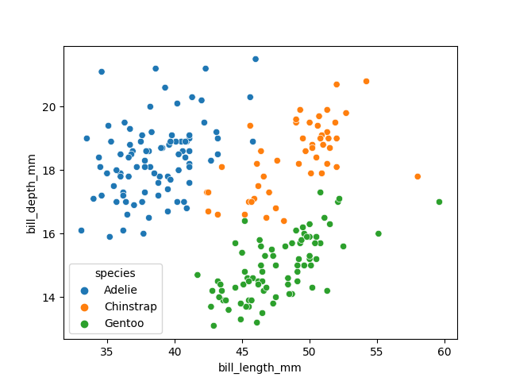
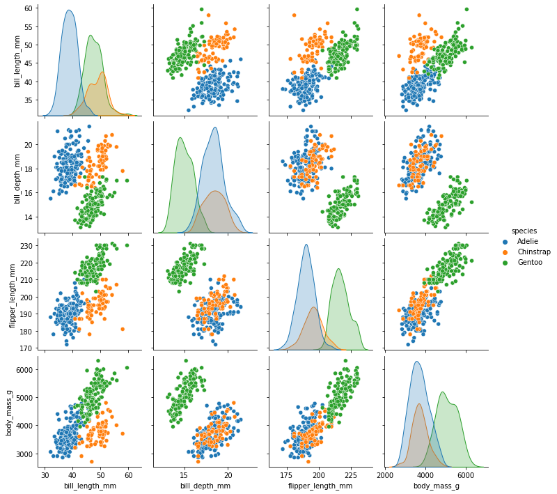
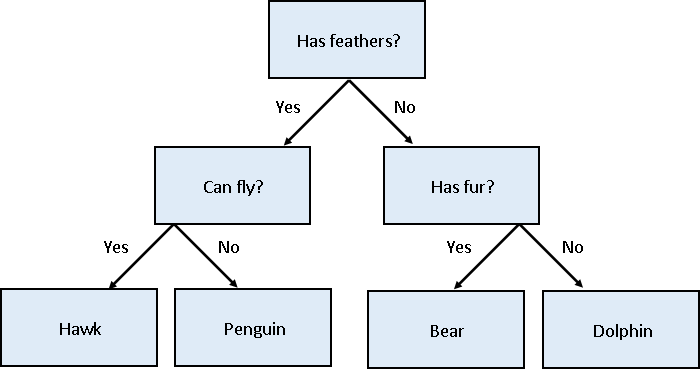
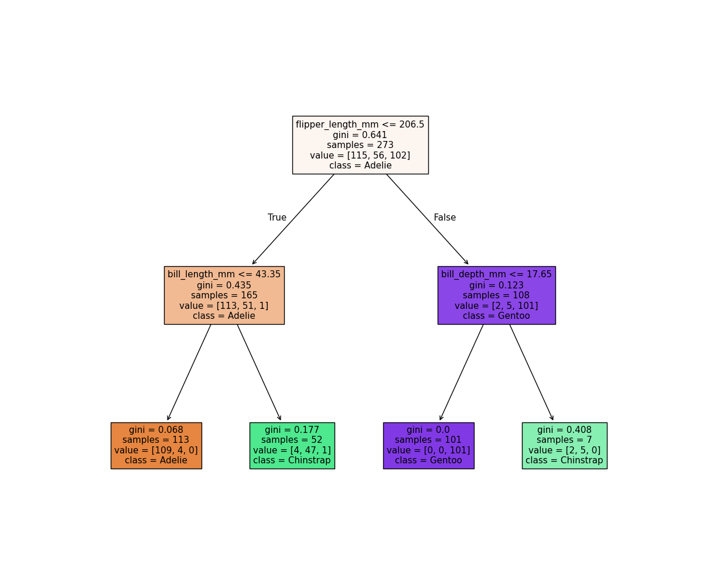
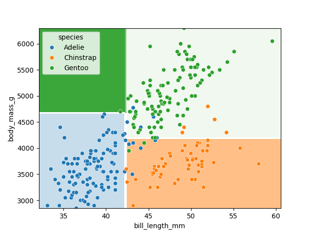
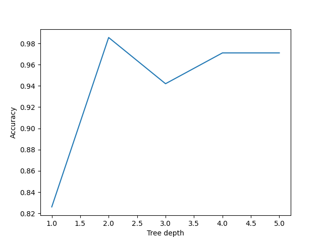
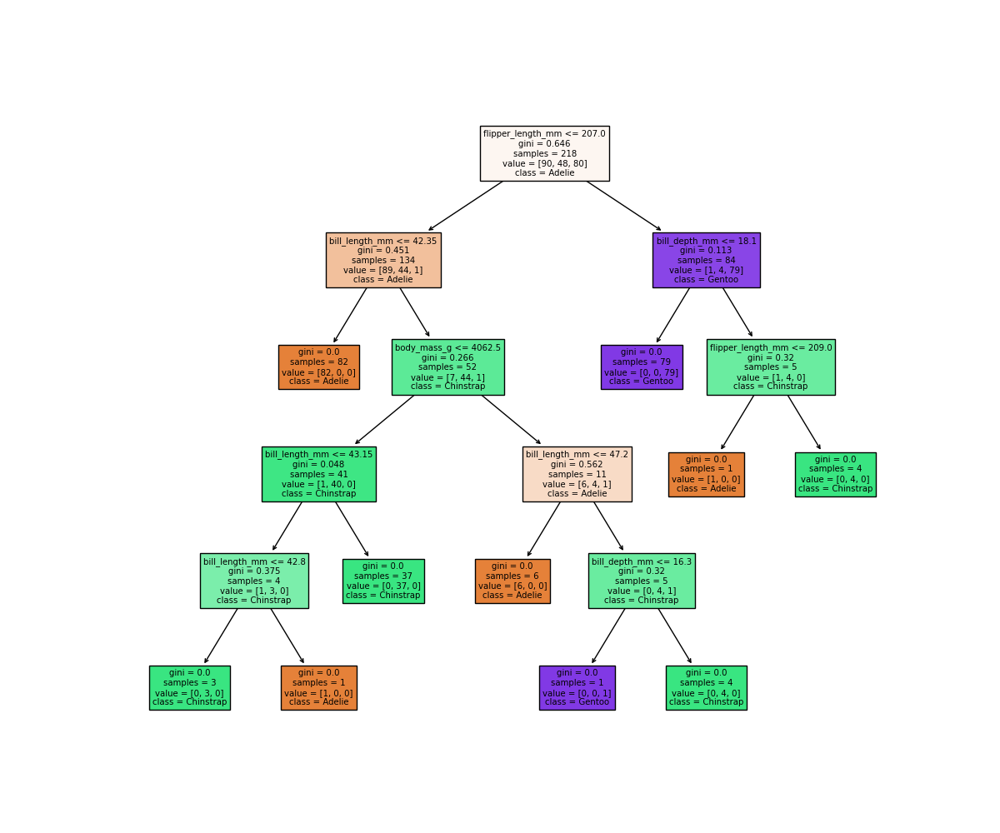
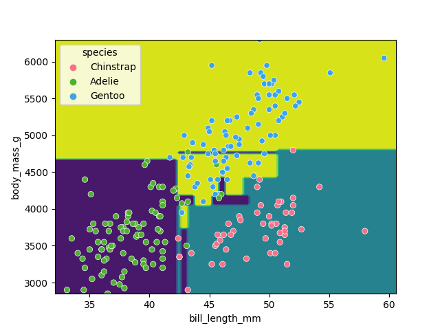
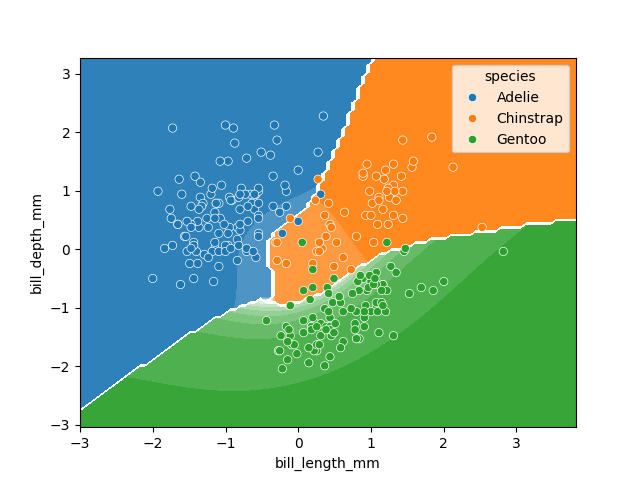

Supervised methods - Classification
Last updated on 2026-06-05 | Edit this page
Estimated time: 60 minutes
Overview
Questions
- How can I classify data into known categories?
Objectives
- Use two different supervised methods to classify data.
- Learn about the concept of hyper-parameters.
- Learn to validate and cross-validate models
Classification
Classification is a supervised method to recognise and group data objects into a pre-determined categories. Where regression uses labelled observations to predict a continuous numerical value, classification predicts a discrete categorical fit to a class. Classification in ML leverages a wide range of algorithms to classify a set of data/datasets into their respective categories.
We’ll be using the same penguins dataset that we used in the last section. Remember that this contained the data on three species of penguin (Chinstrap, Gentoo and Adélie). The dataset contained the variables flipper length, beak length, beak width, body mass, and sex for the three species.
Our aim is to develop a classification model that will predict the species of a penguin based upon measurements of those variables.
As a rule of thumb for ML/DL modelling, it is best to start with a simple model and progressively add complexity in order to meet our desired classification performance.
For this lesson we will limit our dataset to only numerical values such as bill_length, bill_depth, flipper_length, and body_mass while we attempt to classify species.
The above table contains multiple categorical objects such as species. If we attempt to include the other categorical fields, island and sex, we might hinder classification performance due to the complexity of the data.
Preprocessing our data
Lets load up and pre-process our dataset and specify our
X features and y labels:
PYTHON
import seaborn as sns
dataset = sns.load_dataset("penguins")
# Extract the data we need
feature_names = ['bill_length_mm', 'bill_depth_mm', 'flipper_length_mm', 'body_mass_g']
dataset.dropna(subset=feature_names, inplace=True)
class_names = dataset['species'].unique()
X = dataset[feature_names]
y = dataset['species']Having extracted our features X and labels
y, we can now split the data using the
train_test_split function.
Training-testing split
When undertaking any machine learning project, it’s important to be able to evaluate how well your model works.
Rather than evaluating this manually we can instead set aside some of our training data, usually 20% of our training data, and use these as a testing dataset. We then train on the remaining 80% and use the testing dataset to evaluate the accuracy of our trained model.
We lose a bit of training data in the process, But we can now easily evaluate the performance of our model. With more advanced test-train split techniques we can even recover this lost training data!
Why do we do this?
It’s important to do this early, and to do all of your work with the training dataset - this avoids any risk of you introducing bias to the model based on your own manual observations of data in the testing set (afterall, we want the model to make the decisions about parameters!). This can also highlight when you are over-fitting on your training data.
How we split the data into training and testing sets is also extremely important. We need to make sure that our training data is representitive of both our test data and actual data.
For classification problems this means we should ensure that each class of interest is represented proportionately in both training and testing sets. For regression problems we should ensure that our training and test sets cover the range of feature values that we wish to predict.
In the previous regression episode we created the penguin training data by taking the first 146 samples our the dataset. Unfortunately the penguin data is sorted by species and so our training data only considered one type of penguin and thus was not representitive of the actual data we tried to fit. We could have avoided this issue by randomly shuffling our penguin samples before splitting the data.
When not to shuffle your data
Sometimes your data is dependant on it’s ordering, such as time-series data where past values influence future predictions. Creating train-test splits for this can be tricky at first glance, but fortunately there are existing techniques to tackle this (often called stratification): See Scikit-Learn for more information.
We specify the fraction of data to use as test data, and the function randomly shuffles our data prior to splitting:
PYTHON
from sklearn.model_selection import train_test_split
X_train, X_test, y_train, y_test = train_test_split(X, y, test_size=0.2, random_state=0)We’ll use X_train and y_train to develop
our model, and only look at X_test and y_test
when it’s time to evaluate its performance.
Visualising the data
In order to better understand how a model might classify this data, we can first take a look at the data visually, to see what patterns we might identify.
PYTHON
import matplotlib.pyplot as plt
fig01 = sns.scatterplot(X_train, x=feature_names[0], y=feature_names[1], hue=dataset['species'])
plt.show()
As there are four measurements for each penguin, we need quite a few plots to visualise all four dimensions against each other. Here is a handy Seaborn function to do so:

We can see that penguins from each species form fairly distinct spatial clusters in these plots, so that you could draw lines between those clusters to delineate each species. This is effectively what many classification algorithms do. They use the training data to delineate the observation space, in this case the 4 measurement dimensions, into classes. When given a new observation, the model finds which of those class areas the new observation falls in to.
Classification using a decision tree
We’ll first apply a decision tree classifier to the data. Decisions trees are conceptually similar to flow diagrams (or more precisely for the biologists: dichotomous keys). They split the classification problem into a binary tree of comparisons, at each step comparing a measurement to a value, and moving left or right down the tree until a classification is reached.

Training and using a decision tree in Scikit-Learn is straightforward:
Note: Decision trees sometimes use randomness when selecting features to split on, especially when working with data where splits could have equal information gain or in ensemble methods (like Random Forests) where random feature subsets are selected. Setting random_state ensures that this randomness is reproducible.
PYTHON
from sklearn.tree import DecisionTreeClassifier, plot_tree
clf = DecisionTreeClassifier(max_depth=2, random_state=0)
clf.fit(X_train, y_train)
clf.predict(X_test)Hyper-parameters: parameters that tune a model
‘Max Depth’ is an example of a hyper-parameter for the decision tree model. Where models use the parameters of an observation to predict a result, hyper-parameters are used to tune how a model works. Each model you encounter will have its own set of hyper-parameters, each of which affects model behaviour and performance in a different way. The process of adjusting hyper-parameters in order to improve model performance is called hyper-parameter tuning.
We can conveniently check how our model did with the .score() function, which will make predictions and report what proportion of them were accurate:
Our model reports an accuracy of ~98% on the test data! We can also look at the decision tree that was generated:
PYTHON
fig = plt.figure(figsize=(12, 10))
plot_tree(clf, class_names=class_names, feature_names=feature_names, filled=True, ax=fig.gca())
plt.show()
The first first question (depth=1) splits the training
data into “Adelie” and “Gentoo” categories using the criteria
flipper_length_mm <= 206.5, and the next two questions
(depth=2) split the “Adelie” and “Gentoo” categories into
“Adelie & Chinstrap” and “Gentoo & Chinstrap” predictions.
Visualising the classification space
We can visualise the classification space (decision tree boundaries) to get a more intuitive feel for what it is doing. Note that our 2D plot can only show two parameters at a time, so we will quickly visualise by training a new model on only 2 features:
PYTHON
from sklearn.inspection import DecisionBoundaryDisplay
f1 = feature_names[0]
f2 = feature_names[3]
clf = DecisionTreeClassifier(max_depth=2, random_state=0)
clf.fit(X_train[[f1, f2]], y_train)
d = DecisionBoundaryDisplay.from_estimator(clf, X_train[[f1, f2]])
sns.scatterplot(X_train, x=f1, y=f2, hue=y_train, palette="husl")
plt.show()
Exercise: Tuning the max_depth hyperparameter
Our decision tree using a max_depth=2 is fairly simple
and there are still some incorrect predictions in our final
classifications. Try varying the max_depth hyperparameter
to see if you can improve our model predictions.
PYTHON
import pandas as pd
max_depths = [1, 2, 3, 4, 5]
accuracy = []
for i, d in enumerate(max_depths):
clf = DecisionTreeClassifier(max_depth=d, random_state=0)
clf.fit(X_train, y_train)
acc = clf.score(X_test, y_test)
accuracy.append((d, acc))
acc_df = pd.DataFrame(accuracy, columns=['depth', 'accuracy'])
sns.lineplot(acc_df, x='depth', y='accuracy', marker='o')
plt.xlabel('Tree depth')
plt.ylabel('Accuracy')
plt.show()
Here we can see that a max_depth=2 performs slightly
better on the test data than those with
max_depth > 2.
Exercise: Why do deeper trees reduce performance?
It can seem counter intuitive that making a deeper tree reduces performance, as surely more questions should be able to better split up our categories and thus give better predictions?
Reuse the fitting and plotting code from above to inspect a decision
tree that has max_depth=5. What differences do you see in
this plot compared to the max_depth=2 plot? What does this
tell you about the tree trained on max_depth=5?
PYTHON
clf = DecisionTreeClassifier(max_depth=5, random_state=0)
clf.fit(X_train, y_train)
fig = plt.figure(figsize=(12, 10))
plot_tree(clf, class_names=class_names, feature_names=feature_names, filled=True, ax=fig.gca())
plt.show()
It looks like our decision tree has split up the training data into
the correct penguin categories and more accurately than the
max_depth=2 model did, however it used some very specific
questions to split up the penguins into the correct categories.
By visualising the classification space we can get a more intuitive understanding:
PYTHON
f1 = feature_names[0]
f2 = feature_names[3]
clf = DecisionTreeClassifier(max_depth=5, random_state=0)
clf.fit(X_train[[f1, f2]], y_train)
d = DecisionBoundaryDisplay.from_estimator(clf, X_train[[f1, f2]])
sns.scatterplot(X_train, x=f1, y=f2, hue=y_train, palette='husl')
plt.show()
Earlier we saw that the max_depth=2 model split the data
into 3 simple bounding boxes, whereas for max_depth=5 we
see the model has created some very specific classification boundaries
to correctly classify every point in the training data.
This is a classic case of over-fitting - our model has produced extremely specific parameters that work for the training data but are not representitive of our test data. Sometimes simplicity is better!
Exercise: Bias-Variance tradeoff (optional)
Typically, as we initially transition from simple to more complex models (e.g., depth of 1 -> 2), we’ll see an increase in model performance (test set accuracy). However, beyond a certain point of complexity, the model will be more prone to overfitting effects. This is known as the “U-shaped” Bias-Variance tradeoff, where “bias” represents prediction error from models being too simple, and “variance” represents prediciton errors from models’ being too complex. This is because more complicated models begin to memorize the noise in the training data rather than capture underlying patterns in the data. What happens as we continue to add depth to our tree?
PYTHON
max_depths = list(range(1,30))
accuracy = []
for d in max_depths:
clf = DecisionTreeClassifier(max_depth=d, random_state=0)
clf.fit(X_train, y_train)
acc = clf.score(X_test, y_test)
accuracy.append((d, acc))
acc_df = pd.DataFrame(accuracy, columns=['depth', 'accuracy'])
sns.lineplot(acc_df, x='depth', y='accuracy')
plt.xlabel('Tree depth')
plt.ylabel('Accuracy')
plt.show()We observe that this data doesn’t seem to susceptible to the classic, U-shaped, bias-variance curve. Why might this be? There are at least two factors contributing to these results:
- We only have 4 predictors. With so few predictors, there are only so many unique tree structures that can be tested/formed. This makes overfitting less likely.
- Our data is sourced from a python library, and has been cleaned/vetted. Real-world data typically has more noise.
Let’s try adding a small amount of noise to the data using the below code. How does this impact the ideal setting for depth level?
PYTHON
# 1) LOAD DATA (if not loaded already)
import seaborn as sns
dataset = sns.load_dataset('penguins')
dataset.head()
# 2) Extract the data we need and drop NaNs (if not done already)
feature_names = ['bill_length_mm', 'bill_depth_mm', 'flipper_length_mm', 'body_mass_g']
dataset.dropna(subset=feature_names, inplace=True)
class_names = dataset['species'].unique()
X = dataset[feature_names]
y = dataset['species']
# 3) ADD RANDOM NOISE TO X
import numpy as np
stds = X.std(axis=0).to_numpy()
# Generate noise and scale it
# Set seed for reproducibility
np.random.seed(42)
noise = np.random.normal(0, 1, X.shape) # sample numbers from normal distribution
scaled_noise = noise * stds # up to 1
X_noisy = X + scaled_noise
import matplotlib.pyplot as plt
fig01 = sns.scatterplot(X, x=feature_names[0], y=feature_names[1], hue=dataset['species'])
plt.show()
fig02 = sns.scatterplot(X_noisy, x=feature_names[0], y=feature_names[1], hue=dataset['species'])
plt.show()
# 4) TRAIN/TEST SPLIT
from sklearn.model_selection import train_test_split
# X_train, X_test, y_train, y_test = train_test_split(X, y, test_size=0.2, random_state=0, stratify=y)
X_train, X_test, y_train, y_test = train_test_split(X_noisy, y, test_size=0.2, random_state=0, stratify=y)
# 5) HYPERPARAM TUNING
from sklearn.tree import DecisionTreeClassifier
import pandas as pd
import matplotlib.pyplot as plt
max_depths = list(range(1,200))
accuracy = []
for d in max_depths:
clf = DecisionTreeClassifier(max_depth=d)
clf.fit(X_train, y_train)
acc = clf.score(X_test, y_test)
accuracy.append((d, acc))
acc_df = pd.DataFrame(accuracy, columns=['depth', 'accuracy'])
sns.lineplot(acc_df, x='depth', y='accuracy')
plt.xlabel('Tree depth')
plt.ylabel('Accuracy')
plt.show()Classification using support vector machines
Next, we’ll look at another commonly used classification algorithm, and see how it compares. Support Vector Machines (SVM) work in a way that is conceptually similar to your own intuition when first looking at the data. They devise a set of hyperplanes that delineate the parameter space, such that each region contains ideally only observations from one class, and the boundaries fall between classes. One of the core strengths of Support Vector Machines (SVMs) is their ability to handle non-linear relationships between features by transforming the data into a higher-dimensional space. This transformation allows SVMs to find a linear boundary/hyperplane in this new space, which corresponds to a non-linear boundary in the original space.
What are the “trainable parameters” in an SVM? For a linear SVM, the trainable parameters are:
- Weight vector: A vector that defines the orientation of the hyperplane. Its size is equal to the number of features in X.
- Bias: A scalar value that shifts the hyperplane to maximize the margin.
When to Choose SVM Over Decision Tree
- High-Dimensional Data:
- Why SVM: SVMs excel in high-dimensional spaces because the kernel trick allows them to separate classes even in complex feature spaces without explicitly mapping the data.
- Why Not Decision Tree: Decision trees struggle with high-dimensional data as the number of potential splits grows exponentially, leading to overfitting or underperformance.
- Accuracy over Interpretability:
- Why SVM: SVMs are often considered black-box models, focusing on accuracy rather than interpretability.
- Why Not Decision Tree: Decision trees are typically interpretable, making them better if you need to explain your model.
Standardizing data
Unlike decision trees, SVMs require an additional pre-processing step for our data. We need to standardize or “z-score” it. Our raw data has parameters with different magnitudes such as bill length measured in 10’s of mm’s, whereas body mass is measured in 1000’s of grams. If we trained an SVM directly on this data, it would only consider the parameter with the greatest variance (body mass).
Standarizing maps each parameter to a new range so that it has a mean of 0 and a standard deviation of 1. This places all features on the same playing field, and allows SVM to reveal the most accurate decision boundaries.
When to Standardize Your Data: A Broader Overview
Standardization is an essential preprocessing step for many machine learning models, particularly those that rely on distance-based calculations to make predictions or extract features. These models are sensitive to the scale of the input features because their mathematical foundations involve distances, magnitudes, or directions in the feature space. Without standardization, features with larger ranges can dominate the calculations, leading to suboptimal results. However, not all models require standardization; some, like decision trees, operate on thresholds and are unaffected by feature scaling. Here’s a breakdown of when to standardize, explicitly explaining the role of distance-based calculations in each case.
When to Standardize: Models That Use Distance-Based Calculations
Support Vector Machines (SVMs): SVMs calculate the distance of data points to a hyperplane and aim to maximize the margin (the distance between the hyperplane and the nearest points, called support vectors).
k-Nearest Neighbors (k-NN): k-NN determines class or value predictions based on the distance between a query point and its k-nearest neighbors in the feature space.
Logistic Regression with Regularization: Regularization terms (e.g., L1 or L2 penalties) involve calculating the magnitude (distance) of the parameter vector to reduce overfitting and encourage simplicity.
Principal Component Analysis (PCA): PCA identifies principal components by calculating the Euclidean distance from data points to the axes representing the highest variance directions in the feature space.
Neural Networks (NNs): Neural networks rely on gradient-based optimization to learn weights. If input features have vastly different scales, gradients can become unstable, slowing down training or causing convergence issues. Standardizing or normalizing (scaling from 0 to 1) features ensures that all inputs contribute equally to the optimization process.
Linear Regression (for Interpreting Many Coefficients): While linear regression itself doesn’t rely on distance-based calculations, standardization is crucial when interpreting coefficients because it ensures that all features are on the same scale, making their relative importance directly comparable. Without standardization, coefficients in linear regression reflect the relationship between the dependent variable and a feature in the units of that feature, making it difficult to compare features with different scales (e.g., height in centimeters vs. weight in kilograms).
When to Skip Standardization: Models That Don’t Use Distance-Based Calculations
Decision Trees: Decision trees split data based on thresholds, independent of feature scales, without relying on any distance-based calculations.
Random Forests: Random forests aggregate decisions from multiple trees, which also use thresholds rather than distance-based metrics.
Gradient Boosted Trees: Gradient boosting optimizes decision trees sequentially, focusing on residuals and splits rather than distance measures.
By understanding whether a model relies on distance-based calculations (or benefits from standardized features for interpretability), you can decide whether standardization is necessary, ensuring that your preprocessing pipeline is well-suited to the algorithm you’re using.
PYTHON
from sklearn import preprocessing
import pandas as pd
scalar = preprocessing.StandardScaler()
scalar.fit(X_train)
X_train_scaled = pd.DataFrame(scalar.transform(X_train), columns=X_train.columns, index=X_train.index)
X_test_scaled = pd.DataFrame(scalar.transform(X_test), columns=X_test.columns, index=X_test.index)Note that we fit the scalar to our training data - we then use this same pre-trained scalar to transform our testing data.
With this scaled data, training the models works exactly the same as before.
PYTHON
from sklearn import svm
SVM = svm.SVC(kernel='poly', degree=3, C=1.5)
SVM.fit(X_train_scaled, y_train)
svm_score = SVM.score(X_test_scaled, y_test)
print("Decision tree score is ", clf_score)
print("SVM score is ", svm_score)We can again visualise the decision space produced, also using only two parameters:
PYTHON
x2 = X_train_scaled[[feature_names[0], feature_names[1]]]
SVM = svm.SVC(kernel='poly', degree=3, C=1.5)
SVM.fit(x2, y_train)
DecisionBoundaryDisplay.from_estimator(SVM, x2) #, ax=ax
sns.scatterplot(x2, x=feature_names[0], y=feature_names[1], hue=dataset['species'])
plt.show()
While this SVM model performs slightly worse than our decision tree (95.6% vs. 98.5%), it’s likely that the non-linear boundaries will perform better when exposed to more and more real data, as decision trees are prone to overfitting and requires complex linear models to reproduce simple non-linear boundaries. It’s important to pick a model that is appropriate for your problem and data trends!
- Classifiers built with supervised techniques require labelled data to train on.
- We usually split our data into training and test sets with 80% of the data used for training and 20% used to test it.
- We must be careful that our training and test sets have similar characteristics.
- Decision trees are a simple method of classification that can work well on simpler data.
- Hyper parameters are parameters which affect the behaviour of training a model.
- Tree depth in a decision tree is an example of a hyper parameter.
- Support vector machines work well on more complex data with non-linear boundaries.
- Support vector machines use a “kernel trick” to transition data into a higher dimensional space.